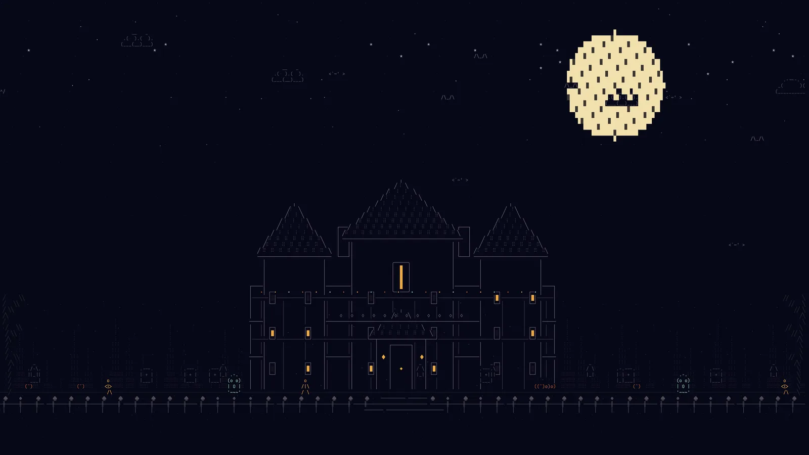

Haunted Estate
A Victorian manor above a graveyard, framed by old trees, cats, bats, and lantern-bearing visitors.
A collection of illustrated Halloween nights
Hand-authored moonlit dioramas — manor, forest, harvest village, and mausoleum — rendered fullscreen with slow breathing motion, drifting fog, and restrained lightning.
omarchy plugin add https://github.com/DailenG/omarchtober --enable

MOONLIT ↔ HARVESTThe collection
A Victorian manor above a graveyard, framed by old trees, cats, bats, and lantern-bearing visitors.
An ancient forest path past a stone well toward an amber-lit crooked cottage.
A warm harvest village with a clock tower, pumpkin fields, and costumed visitors.
A cypress avenue with reflecting pools, statues, fog, and an ornate chapel.
Presentation, not generation
Slow breathing scale, independent fog bands, long crossfades between scenes, and rare lightning. One slider takes it from frozen to theatrical.
Moonlit, Harvest, Spectral, and Midnight recolor the whole collection through the stage, never by rewriting the bundled plates.
Omarchy-native
One fullscreen player per monitor, cover-cropped to any aspect ratio. Omarchy keeps lock ownership; any key, click, or pointer motion returns you to the desktop.
Designed for contributors and agents
The scene contract covers composition, palette, texture, depth layers, content safety, asset format, catalog registration, and acceptance checks. A copy-ready prompt lets an AI agent add an original plate without inventing parallel infrastructure.
Read the scene guide